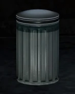

Dificuldades
O Jogo é divido em 5 modos dificuldades, sendo os mais fáceis pra dar a oportunidade curtir a emocionante e imersa história e para aqueles que gostam de um modo que prove que são jogadores de verdade, o modo sobrevivente é o modo perfeito para eles. Sendo eles em ordem: Muito Trivial, Trivial, Moderado, Difícil, Sobrevivente e Grounded.
| Muito Trivial | Trivial | Moderado | Difícil | Sobrevivente | Grounded | Permadeath |
|---|---|---|---|---|---|---|
| Um modo onde você pode tirar proveito de toda a história do jogo. Onde haverá poucos desafios nos combates e auxílios de mira e câmera por padrão | Esse é o modo em que você quer curtir a história mas com desafios mais leves que o moderado porém mais difíceis que o muito trivial. Com mais recursos ao longo do jogo e inimigos menos perigosos. | Esse é o modo "padrão" do jogo, aquele que como o nome diz, sua dificuldade é moderada, tendo uma diminuição nos recursos disponíveis, fazendo que você pense nas melhores modificações e economizar o materiais. Aqui é uma boa oportunidade de experiênciar uma imersão maior. Em breve falaremos dos recursos e estratégias que darão uma imagem ainda melhor dos dois jogos. | Aqui é o caso de você já estar acostumado com estratégias e a história do jogo e deseja um desafio maior, mas não tão hardcore. Os recursos são ainda mais limitados e os inimigos mais agressivos e perigosos. | Esse é o modo que com certeza você jogará apenas se quiser uma dificuldade extremamente elevada. E o modo escuta(do qual também falaremos depois) é removido. | Esse é o modo mais realista e desafiador do jogo de The Last of Us. Os recursos de modo escuta, HUD(outro que iremos falar depois) são alterados. | Esse é o modo que assim como diz, a morte é permanente, ao morrer o jogo será totalmente perdido e não poderá voltar em pontos de checkpoint do próprio jogo, mas dá para criar checkpoints ao configurar o permadeath por capítulos do jogo, ao ultrapassar um capítulo, pode configurar novamente o permadeath |
Itens, Materiais e HUD
O jogo possui uma série de itens dos quais aparecerão ao longo da sua jornada, além disso possui o recurso HUD(Heads-up Display) onde você poderá acessar parte desses itens e verificar a vida do personagem. Vamos ver mais sobre eles!
Construtivos
Em vários espaços no jogo, móveis, etc, há materiais que podem servir para diferentes propósitos, como construir equipamentos para matar zumbis ou humanos, ou para se curar e melhorar equipamentos.
Álcool
Incluem garrafas de vodka e de álcool 99% que podem ser combinados com o trapo para construir kits de curativos ou um Molotov.
Vinculativos
No mapa aparecem fitas das quais você pode pegar para juntar e formar várias coisas. Como por exemplo: com as lâminas você pode fazer facas que te ajudarão a matar Clickers que são zumbis mais fortes que os Runners e Stalkers. Você pode melhorar armas que irão aparecer também como machados, tacos de baseball, etc.
Lâminas
Você encotrará ao longo do jogo partes quebradas de tesouras ou jarros cheios de tipos de lâminas, você pode fazer uma espécie de faca combinando elas com os vinculativos ou fazer melhorias em armas de corpo-a-corpo como o taco de baseball. Com lâminas e explosivos você poderá fazer uma bomba de estilhaços na parte II.
Vasilha
Com estes materiais no segundo jogo, você poderá fazer armadilhas como minas ou bombas de choque.
Explosivos
Eles vem com sacos com pólvora dentro ou sacos de fertilizantes, assim como vimos, combinando eles com açúcar faz se bombas de fumaça e as bombas que já falamos.
Trapo
Incluem partes de roupas ou coisa do tipo, e ao junta-las com álcool poderá criar Molotovs e kits de cura.
Açúcar
Incluem pequenos saches ou pacotes, e podem servir podem ser usadas para fazer bombas das quais já falamos.
Tools, Parts e Pills
Estas peças aparecem durante o jogo e são usadas nas mesas de trabalho para melhoria de armas ou da própria mesa de trabalho (Tools e Parts). As Pìlls são usadas para cura ou para evoluir o personagem, onde poderá aumentar coisas como barra de vida e habilidades de combate.
Mesa de Trabalho
A mesa de trabalho aparece em lugares especificos em todo o jogo, geralmente dentro de casas ou armazens. Ela serve para fazer melhorias ainda mais avançadas em armas e equipamentos de luta de corpo-a-corpo
Itens Colecionáveis
Esses itens estão escondidos no jogo e eles apenas servem pra você coletar esses itens para ganhar troféis e platinar o jogo. E tem também manuais de treinamento que vão te dar novas habilidades pra que possar evoluir com as Pills.
Armas, Munições e Itens Arremessáveis
No jogo há varias armas e munições que aparecem durante o jogo. Elas aparecem depois de você matar um personagem ou dentro de casas enquanto você explora o ambiente. As armas de luta corpo-a-corpo podem ser construídas ou melhoradas e aparecem mais no mapa que armas e munições. Quanto aos itens Arremessáveis elas são garrafas de cerveja ou alcool vazias e blocos de tijolo. Você pode usá-los para arremessar em inimigos, arremessar para fazer barulho em estratégias furtivas e acertar inimigos em luta corpo-a-corpo.
Modo Escuta
O modo escuta é simplesmente o artifício que você mais usará no jogo, ele permite que você consiga "enxergar" os inimigos, é um efeito escuro, deixando as coias que façam som mais claras, com um tom levemente branco. Assim suas estratégias furtivas serão ainda melhores. Os humanos podem ficar escondidos nesse modo, e os Stalkers (tipo de zumbi) também. A habilidade de Ellie é fraca no primeiro jogo, isso é bom já que ela é criança e não treinou os ouvidos, já no segundo jogo, sua habilidade de escuta pode ser melhor que o Joel.
Combate e inteligência Artificial
OS combates mudam entre os jogos, mas há ataques corpo-a-corpo, socos, armas brancas, etc. Com os materiais arremessáveis você pode bater com eles também, exceto o Molotov. Quanto a IA do primeiro jogo, ela apresenta certa comodidade, embora tenha um fato curioso, ela foi criada expecificamente pro jogo de TLoU, e adaptada em jogos posteriores com Uncharted 3. No primeiro jogo, a IA companheira não tem tanta resposta de defesa quanto o segundo jogo. A IA não é alterada em todos os remakes destes também. Embora tenham uma boa interação e dialogos durante o jogo, quando estão em combate, diferente do segundo jogo, o personagem aliado não te ajuda e atira as cegas, fica escondido contigo mas passa na frente de inimigos e não é notado, como se fosse um elemento fantasma. No segundo jogo isso muda um pouco.


Exploração
Mapas extremamente abertos, vários ambientes onde que dão a liberdade para entrar, vários locais onde pode conter materiais importantes ou colecionáveis, além de possuir vários puzzles e coisas que se completam como uma história dentro da história principal, isso deixa o jogo ainda mais imersivo, difícil e dando complexidade misturada com complitude. No segundo jogo a exploração se integra com as novas capacidades da personagem, como falamos no tópico das diferenças abaixo. E claro por ser um jogo para uma geração mais nova de consoles e computadores, algumas partes são muito mais interativas que o primeiro jogo.
PRICIPAIS DIFERENÇAS ENTRE PART I E II
Part I foi dada ao primeiro jogo de The Last of Us para a versão do PS5. Como não há muitas mudanças na jogabilidade e sim nas questões gráficas, irei usar ele para falar do tema proposto.
Existem poucas diferenças na jogabilidade de ambos os jogos e o principal motivo disso é que o primeiro jogo recebeu dois remakes, um para o PS4 e outro para PS5. Então ao longo desses teve certas mudanças. Mas é claro que há mudanças notáveis na jogabilidade em The Last of Us Part II, como por exemplo, no segundo jogo tem o botão de pular. Agora, vamos ver outras mudanças.
Uma Nova Maneira de Jogo furtivo
Diferente do primeiro jogo, Part II acrescenta uma série de coisas que ajudam no modo furtivo. Além de haver os objetos Arremessáveis, o jogo adiciona um agachamento que te permite ficar em baixo de carros. A passar entre espaços mais apertados, em lugares que cabem a personagem. Além de haver no ambiente matos mais altos onde você poderá se agachar neles e se esconder do inimigo. Muito parecido com Horizon Zero Dawn.
Combate
No combate as coisas ficam mais interessantes e brutais, além de agora conseguir arremessar objetos enquanto corre, agora você pode fazer combos ainda mais violentos e emocionantes. Estes combos combinados com a capacidade de esquivar de golpes e de outros ataques de inimigos. Sem contar que os próprios inimigos humanos poderão fazer os mesmos combos e esquivas.
inteligência Artificial
Para completar agora o jogo conta com uma inteligência artificial ainda mais interativa e que deixará o jogo ainda mais real e imersivo. Além de agora alguns deles contar com ajudas caninas, quando o personagem principal está escondido, os inimigos vão conversar entre si, antes de se encontrar com eles, eles estarão tendo dialogos. Mas ai vem a parte interativa entre eles, ao notarem que um deles sumiu por você matar ele sem eles verem, eles irão chamar por esse personagem, quando você matar um deles na frente deles, eles irão gritar por ter perdido seu companheiro e depois xingar você exclamando em vingança (Isso também entra quando você mata um de seus cachorros, e os animais sempre vão ir atrás de você após seus donos darem o comando).
Veja mais no vídeo trailer da gameplay da Part II postado pela Playstation abaixo
| Arte |
|---|
| Agora, veja como os personagens, zumbis, paisagem e história foram modificados pela Arte |
| ACESSE AGORA |